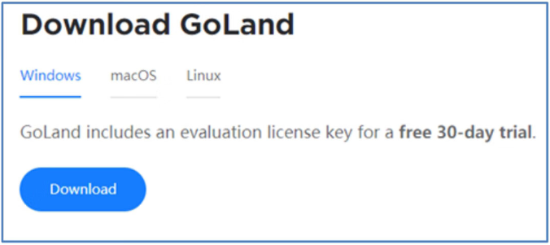
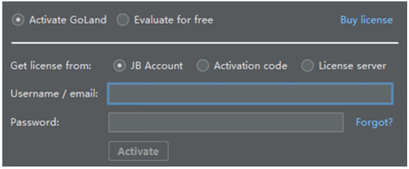
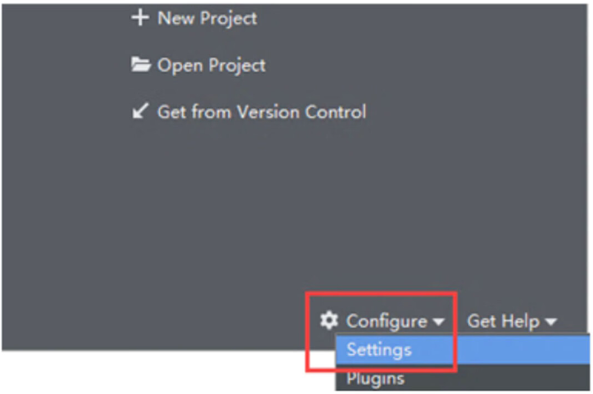
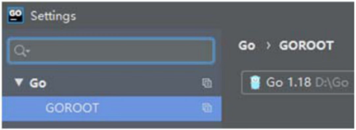
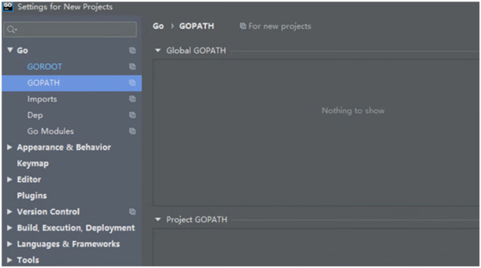
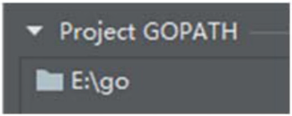
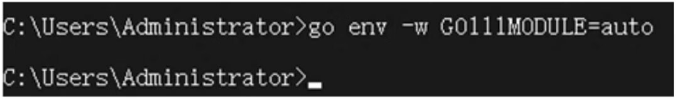
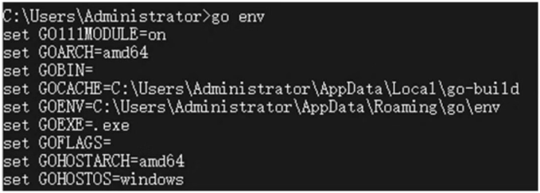

首页 > 编程笔记
GoLand搭建Go语言开发环境（图解）
Go语言的开发环境搭建成功后，下一步安装集成开发环境（Integrated Development Environment, IDE）。
常用的 IDE 软件有 GoLand、VS Code、Vim GO、Sublime Text、LiteIDE、Eclipse 和 Atom 等。这里以 GoLand 为例，讲述如何使用 GoLand 搭建Go语言的开发环境。
在浏览器打开 https://www.jetbrains.com/go/download 并下载 GoLand，如图1所示。
GoLand 分别支持 Windows、Linux 和macOS 三大系统的使用，选择下载 Windows 安装包并双击运行，根据安装提示完成安装过程即可，安装过程较为傻瓜式，本书就不再详细讲述了。
安装成功后，在桌面双击GoLand图标，刚开始提示软件配置，选择默认配置即可进入软件激活界面，激活方式有3种，分别是 Jetbrains 用户激活、激活码和许可服务器，如图2所示。
不同版本的 GoLand 有不同的免费激活方式，由于软件版本迭代更新较快，导致每个版本的激活方式各不相同，有需要的读者可以从网上查找最新的激活教程。
在 Settings for New Projects 界面打开 Go→GOROOT 选项，然后选择已安装的Go语言编译器，如图4所示。
如果 GoLand 不是最新版本，配置 GOROOT 的时候会提示“The selected directory is not a valid home for Go SDK”异常，这是 GoLand 与Go语言版本不匹配导致，我们在Go语言安装目录下打开 src\runtime\internal\sys\zversion.go，然后添加代码：
下一步单击 GOPATH，在该界面看到 Global GOPATH 和 Project GOPATH 配置，如图5所示。
Global GOPATH 和 Project GOPATH 的配置说明如下：
安装Go语言开发环境已设置了环境变量 GOPATH（即 Global GOPATH），我们只需在 Project GOPATH 下配置即可。在 E 盘下创建 go 文件夹，然后在 Project GOPATH 下添加 go 文件夹的路径信息，如图6所示。
最新版本Go语言的配置属性 GO111MODULE 为 on，它用于开启或关闭模块支持，设有3个可选值：off、on、auto，每个可选值的说明如下：
配置属性 GO111MODULE 用于解决早期Go语言对模块或包管理遗漏下来的问题，早期Go语言是通过 GOPATH 和 vendor 文件夹管理模块或包的，现更改为使用 go.mod 管理模块或包。
为了更好地兼容新旧版本问题，我们将 GO111MODULE 设为 auto。打开 CMD 窗口，输入并执行指令
由于国内网络问题，使用 go get 指令下载第三方包会出现网络无法接通的问题，为了解决此问题，在 CMD 窗口输入并执行指令
最后在 CMD 窗口输入
关于Go语言的安装，请转到：Go语言安装教程（Windows+Linux+macOS）
集成开发环境是提供程序开发环境的应用程序，一般包括代码编辑器、编译器、调试器和图形用户界面等工具，它是集成了代码编写功能、分析功能、编译功能、调试功能等一体化的开发软件。常用的 IDE 软件有 GoLand、VS Code、Vim GO、Sublime Text、LiteIDE、Eclipse 和 Atom 等。这里以 GoLand 为例，讲述如何使用 GoLand 搭建Go语言的开发环境。
GoLand 简介
GoLand 是 JetBrains 公司推出的Go语言集成开发环境，同样基于 IntelliJ 平台开发，支持 JetBrains 的插件体系。在浏览器打开 https://www.jetbrains.com/go/download 并下载 GoLand，如图1所示。

图1：下载 GoLand
图1：下载 GoLand
GoLand 分别支持 Windows、Linux 和macOS 三大系统的使用，选择下载 Windows 安装包并双击运行，根据安装提示完成安装过程即可，安装过程较为傻瓜式，本书就不再详细讲述了。
安装成功后，在桌面双击GoLand图标，刚开始提示软件配置，选择默认配置即可进入软件激活界面，激活方式有3种，分别是 Jetbrains 用户激活、激活码和许可服务器，如图2所示。
不同版本的 GoLand 有不同的免费激活方式，由于软件版本迭代更新较快，导致每个版本的激活方式各不相同，有需要的读者可以从网上查找最新的激活教程。

图2：激活界面
图2：激活界面
搭建 GoLand 环境
GoLand 激活成功后，再次打开 GoLand，在 Welcome to GoLand 界面单击 Configure，找到并单击 Settings，从而进入 Settings for New Projects 界面，如图3所示。

图3：Welcome to GoLand 界面
图3：Welcome to GoLand 界面
在 Settings for New Projects 界面打开 Go→GOROOT 选项，然后选择已安装的Go语言编译器，如图4所示。

图4：配置 GOROOT
图4：配置 GOROOT
如果 GoLand 不是最新版本，配置 GOROOT 的时候会提示“The selected directory is not a valid home for Go SDK”异常，这是 GoLand 与Go语言版本不匹配导致，我们在Go语言安装目录下打开 src\runtime\internal\sys\zversion.go，然后添加代码：
const TheVersion = `go1.18`
其中 go1.18 代表Go语言版本，保存文件后即可在 GoLand 配置 GOROOT。下一步单击 GOPATH，在该界面看到 Global GOPATH 和 Project GOPATH 配置，如图5所示。

图5：配置 GOPATH
图5：配置 GOPATH
Global GOPATH 和 Project GOPATH 的配置说明如下：
- Global GOPATH：代表全局 GOPATH，一般来源于系统环境变量中的 GOPATH，所有Go语言项目都能使用该路径，它与Go语言的环境变量 GOPATH 相同。
- Project GOPATH：代表项目所使用的 GOPATH，仅适用于当前项目。
安装Go语言开发环境已设置了环境变量 GOPATH（即 Global GOPATH），我们只需在 Project GOPATH 下配置即可。在 E 盘下创建 go 文件夹，然后在 Project GOPATH 下添加 go 文件夹的路径信息，如图6所示。

图6：配置 Project GOPATH
图6：配置 Project GOPATH
最新版本Go语言的配置属性 GO111MODULE 为 on，它用于开启或关闭模块支持，设有3个可选值：off、on、auto，每个可选值的说明如下：
- GO111MODULE=off：无模块支持，Go语言会从 GOPATH 和 vendor 文件夹寻找包。
- GO111MODULE=on：模块支持，Go语言忽略 GOPATH 和 vendor 文件夹，只根据 go.mod 下载依赖。
- GO111MODULE=auto：分别从 GOPATH、vendor 文件夹或 go.mod 寻找包。
配置属性 GO111MODULE 用于解决早期Go语言对模块或包管理遗漏下来的问题，早期Go语言是通过 GOPATH 和 vendor 文件夹管理模块或包的，现更改为使用 go.mod 管理模块或包。
为了更好地兼容新旧版本问题，我们将 GO111MODULE 设为 auto。打开 CMD 窗口，输入并执行指令
go env -w GO111MODULE=auto即可，如图7所示。

图7：配置属性 GO111MODULE
图7：配置属性 GO111MODULE
由于国内网络问题，使用 go get 指令下载第三方包会出现网络无法接通的问题，为了解决此问题，在 CMD 窗口输入并执行指令
go env -w GOPROXY=https://goproxy.cn,direct即可。最后在 CMD 窗口输入
go env即可查看当前Go语言的环境信息，如图8所示。

图8：Go语言的环境信息
图8：Go语言的环境信息
关注公众号「站长严长生」，在手机上阅读所有教程，随时随地都能学习。内含一款搜索神器，免费下载全网书籍和视频。

微信扫码关注公众号